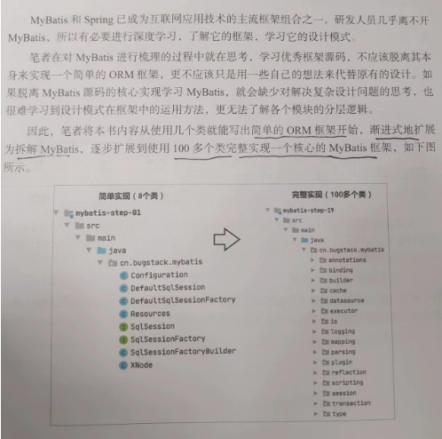
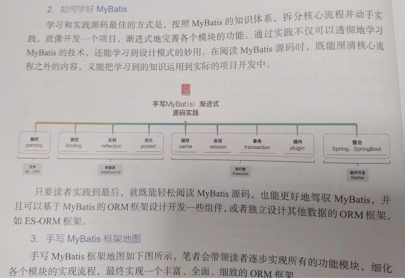
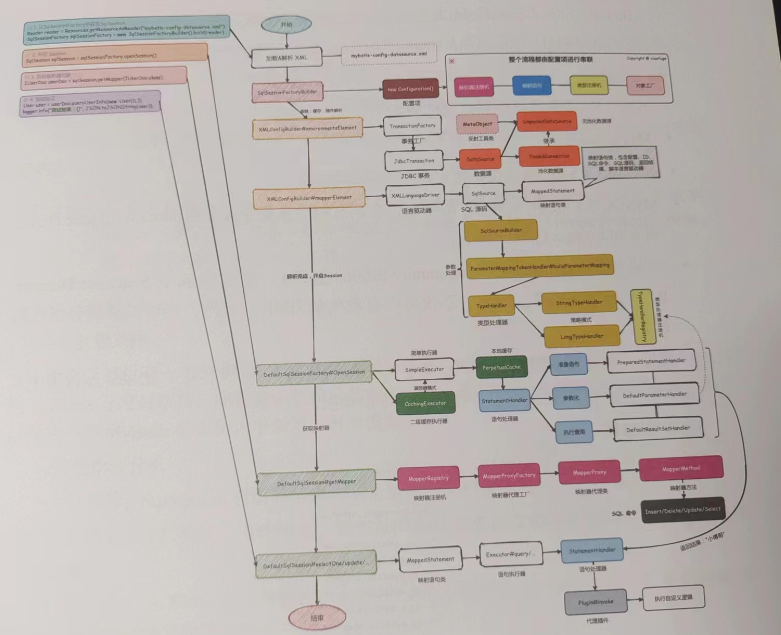
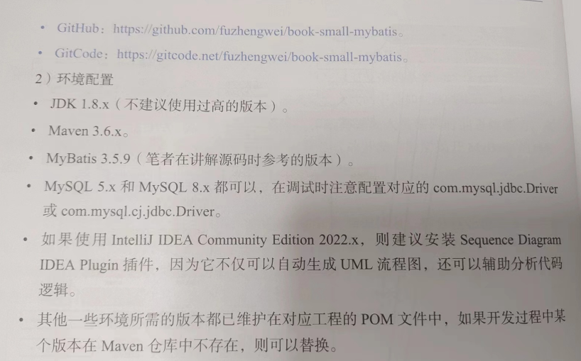
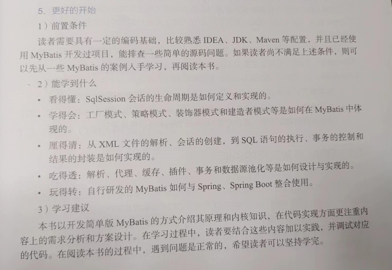
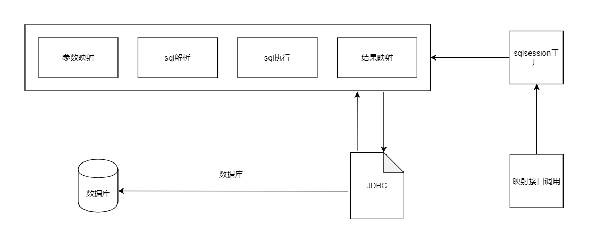
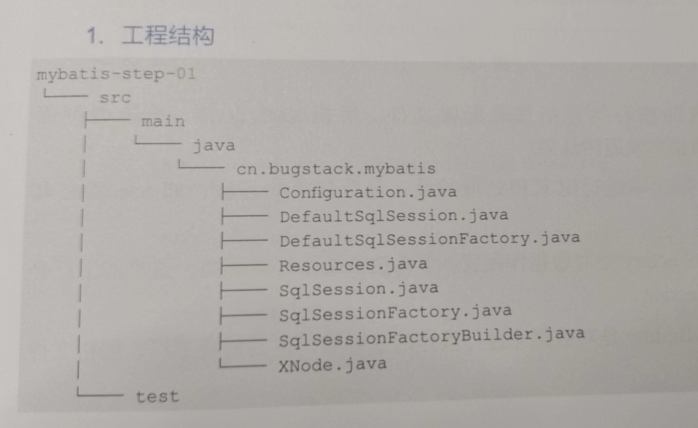
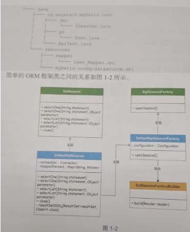
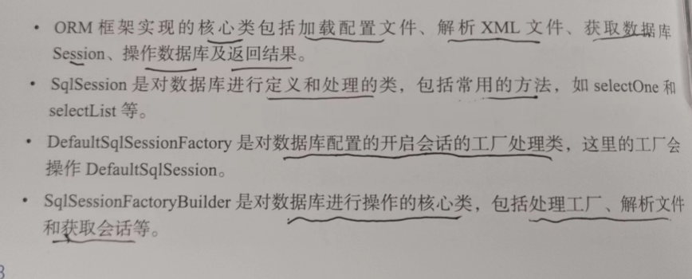

引言





1. 实现一个简单的ORM框架
ORM框架解决的是面向对象和关系数据库之间互不匹配的问题
1.1 ORM框架实现的说明
java以JDBC方式连接数据库
1.2 简单ORM框架的设计
mybatis这类ORM框架主要通过参数映射、sql解析和执行、以及结果封装的方式对数据库进行操作

1.3 简单ORM框架的实现
1.3.1 工程结构



1.3.2 定义sqlsession接口
public interface SqlSession {
<T> T selectOne(String statement);
<T> T selectOne(String statement, Object parameter);
<T> List<T> selectList(String statement);
<T> List<T> selectList(String statement, Object parameter);
void close();
}
定义了对数据库操作的查询接口,分为多个和一个,还包含有参数和无参数的方法.mybatis中,sql语句的执行是从开启sqlsession会话开始的,之后创建执行器,这里为了简化,直接在sqlsession会话实现类defaultsqlsession中操作数据库并执行sql语句
1.3.3 sqlsession默认实现类
包装了元素的提取、数据库的连接、jdbc的执行,并且完成了sql语句执行时入参、出参的处理,最终返回查询结果
resultSet2Obj相当于包装了jdbc操作数据库并将结果封装到java对象的操作
public class DefaultSqlSession implements SqlSession {
private Connection connection;
private Map<String, XNode> mapperElement;
public DefaultSqlSession(Connection connection, Map<String, XNode> mapperElement) {
this.connection = connection;
this.mapperElement = mapperElement;
}
@Override
public <T> T selectOne(String statement) {
try {
XNode xNode = mapperElement.get(statement);
PreparedStatement preparedStatement = connection.prepareStatement(xNode.getSql());
ResultSet resultSet = preparedStatement.executeQuery();
List<T> objects = resultSet2Obj(resultSet, Class.forName(xNode.getResultType()));
return objects.get(0);
} catch (Exception e) {
e.printStackTrace();
}
return null;
}
@Override
public <T> T selectOne(String statement, Object parameter) {
XNode xNode = mapperElement.get(statement);
Map<Integer, String> parameterMap = xNode.getParameter();
try {
PreparedStatement preparedStatement = connection.prepareStatement(xNode.getSql());
buildParameter(preparedStatement, parameter, parameterMap);
ResultSet resultSet = preparedStatement.executeQuery();
List<T> objects = resultSet2Obj(resultSet, Class.forName(xNode.getResultType()));
return objects.get(0);
} catch (Exception e) {
e.printStackTrace();
}
return null;
}
@Override
public <T> List<T> selectList(String statement) {
XNode xNode = mapperElement.get(statement);
try {
PreparedStatement preparedStatement = connection.prepareStatement(xNode.getSql());
ResultSet resultSet = preparedStatement.executeQuery();
return resultSet2Obj(resultSet, Class.forName(xNode.getResultType()));
} catch (Exception e) {
e.printStackTrace();
}
return null;
}
@Override
public <T> List<T> selectList(String statement, Object parameter) {
XNode xNode = mapperElement.get(statement);
Map<Integer, String> parameterMap = xNode.getParameter();
try {
PreparedStatement preparedStatement = connection.prepareStatement(xNode.getSql());
buildParameter(preparedStatement, parameter, parameterMap);
ResultSet resultSet = preparedStatement.executeQuery();
return resultSet2Obj(resultSet, Class.forName(xNode.getResultType()));
} catch (Exception e) {
e.printStackTrace();
}
return null;
}
private void buildParameter(PreparedStatement preparedStatement, Object parameter, Map<Integer, String> parameterMap) throws SQLException, IllegalAccessException {
int size = parameterMap.size();
// 单个参数
if (parameter instanceof Long) {
for (int i = 1; i <= size; i++) {
preparedStatement.setLong(i, Long.parseLong(parameter.toString()));
}
return;
}
if (parameter instanceof Integer) {
for (int i = 1; i <= size; i++) {
preparedStatement.setInt(i, Integer.parseInt(parameter.toString()));
}
return;
}
if (parameter instanceof String) {
for (int i = 1; i <= size; i++) {
preparedStatement.setString(i, parameter.toString());
}
return;
}
Map<String, Object> fieldMap = new HashMap<>();
// 对象参数
Field[] declaredFields = parameter.getClass().getDeclaredFields();
for (Field field : declaredFields) {
String name = field.getName();
field.setAccessible(true);
Object obj = field.get(parameter);
field.setAccessible(false);
fieldMap.put(name, obj);
}
for (int i = 1; i <= size; i++) {
String parameterDefine = parameterMap.get(i);
Object obj = fieldMap.get(parameterDefine);
if (obj instanceof Short) {
preparedStatement.setShort(i, Short.parseShort(obj.toString()));
continue;
}
if (obj instanceof Integer) {
preparedStatement.setInt(i, Integer.parseInt(obj.toString()));
continue;
}
if (obj instanceof Long) {
preparedStatement.setLong(i, Long.parseLong(obj.toString()));
continue;
}
if (obj instanceof String) {
preparedStatement.setString(i, obj.toString());
continue;
}
if (obj instanceof Date) {
preparedStatement.setDate(i, (java.sql.Date) obj);
}
}
}
private <T> List<T> resultSet2Obj(ResultSet resultSet, Class<?> clazz) {
List<T> list = new ArrayList<>();
try {
ResultSetMetaData metaData = resultSet.getMetaData();
int columnCount = metaData.getColumnCount();
// 每次遍历行值
while (resultSet.next()) {
T obj = (T) clazz.newInstance();
for (int i = 1; i <= columnCount; i++) {
Object value = resultSet.getObject(i);
String columnName = metaData.getColumnName(i);
String setMethod = "set" + columnName.substring(0, 1).toUpperCase() + columnName.substring(1);
Method method;
if (value instanceof Timestamp) {
method = clazz.getMethod(setMethod, Date.class);
} else {
method = clazz.getMethod(setMethod, value.getClass());
}
method.invoke(obj, value);
}
list.add(obj);
}
} catch (Exception e) {
e.printStackTrace();
}
return list;
}
@Override
public void close() {
if (null == connection) return;
try {
connection.close();
} catch (SQLException e) {
e.printStackTrace();
}
}
}
1.3.4 sqlsessionFactory接口
openSession方法用于开启数据库会话
public interface SqlSessionFactory {
SqlSession openSession();
}
1.3.5 sqlSessionFactory具体实现类
该实现类构造函数传递了configuration配置文件(给defaultSqlSession),包括Connection、Map(dataSource)、Map(mapperElement)
public class DefaultSqlSessionFactory implements SqlSessionFactory {
private final Configuration configuration;
public DefaultSqlSessionFactory(Configuration configuration) {
this.configuration = configuration;
}
@Override
public SqlSession openSession() {
// 传递配置信息
return new DefaultSqlSession(configuration.connection, configuration.mapperElement);
}
}
1.3.6 SqlSessionFactoryBuilder实现类
public class SqlSessionFactoryBuilder {
public DefaultSqlSessionFactory build(Reader reader) {
SAXReader saxReader = new SAXReader();
try {
Document document = saxReader.read(new InputSource(reader));
Configuration configuration = parseConfiguration(document.getRootElement());
return new DefaultSqlSessionFactory(configuration);
} catch (DocumentException e) {
e.printStackTrace();
}
return null;
}
private Configuration parseConfiguration(Element root) {
Configuration configuration = new Configuration();
configuration.setDataSource(dataSource(root.selectNodes("//dataSource")));
configuration.setConnection(connection(configuration.dataSource));
configuration.setMapperElement(mapperElement(root.selectNodes("mappers")));
return configuration;
}
// 获取数据源配置信息
private Map<String, String> dataSource(List<Element> list) {
Map<String, String> dataSource = new HashMap<>(4);
Element element = list.get(0);
List content = element.content();
for (Object o : content) {
Element e = (Element) o;
String name = e.attributeValue("name");
String value = e.attributeValue("value");
dataSource.put(name, value);
}
return dataSource;
}
private Connection connection(Map<String, String> dataSource) {
try {
Class.forName(dataSource.get("driver"));
return DriverManager.getConnection(dataSource.get("url"), dataSource.get("username"), dataSource.get("password"));
} catch (ClassNotFoundException | SQLException e) {
e.printStackTrace();
}
return null;
}
// 获取SQL语句信息
private Map<String, XNode> mapperElement(List<Element> list) {
Map<String, XNode> map = new HashMap<>();
Element element = list.get(0);
List content = element.content();
for (Object o : content) {
Element e = (Element) o;
String resource = e.attributeValue("resource");
try {
Reader reader = Resources.getResourceAsReader(resource);
SAXReader saxReader = new SAXReader();
Document document = saxReader.read(new InputSource(reader));
Element root = document.getRootElement();
//命名空间
String namespace = root.attributeValue("namespace");
// SELECT
List<Element> selectNodes = root.selectNodes("select");
for (Element node : selectNodes) {
String id = node.attributeValue("id");
String parameterType = node.attributeValue("parameterType");
String resultType = node.attributeValue("resultType");
String sql = node.getText();
// ? 匹配
Map<Integer, String> parameter = new HashMap<>();
Pattern pattern = Pattern.compile("(#\\{(.*?)})");
Matcher matcher = pattern.matcher(sql);
for (int i = 1; matcher.find(); i++) {
String g1 = matcher.group(1);
String g2 = matcher.group(2);
parameter.put(i, g2);
sql = sql.replace(g1, "?");
}
XNode xNode = new XNode();
xNode.setNamespace(namespace);
xNode.setId(id);
xNode.setParameterType(parameterType);
xNode.setResultType(resultType);
xNode.setSql(sql);
xNode.setParameter(parameter);
map.put(namespace + "." + id, xNode);
}
} catch (Exception ex) {
ex.printStackTrace();
}
}
return map;
}
}
包括的核心方法有
- build 构建实例化元素
主要用于创建解析XML文件的类,以及初始化SqlSession工厂类.saxReader.setEntityResolver(new XMLMapperEntityResolver())是为了保证在不连接网络时也可以解析XML文件,否则需要从互联网上获取DTD文件
- parseConfiguration 解析配置
获取XML文件中的元素,主要是dataSource(数据库连接信息)和mappers(数据库操作语句的解析)
- dataSource 获取数据库配置
获取xml中关于创建数据库连接的属性信息,先通过name获取属性名称,再通过value获取值
- connection(Map dataSource) 连接数据库
连接数据库(Class.forName(dataSource.get(“driver”))),要连接多数据库时,可以在这里扩展
- mapperElement 解析sql语句
解析xml文件里的sql语句,这里使用正则表达式解析
1.4 ORM框架的功能测试
1.4.1 创建库表信息
CREATE DATABASE mybatis;
USE mybatis;
CREATE TABLE USER (
id BIGINT NOT NULL AUTO_INCREMENT COMMENT '自增id',
userId VARCHAR(9) COMMENT '用户id',
userHead VARCHAR(16) COMMENT '用户头像',
createTime TIMESTAMP NULL COMMENT '创建时间',
updateTime TIMESTAMP NULL COMMENT '更新时间',
userName VARCHAR(64),
PRIMARY KEY (id)
) ENGINE = INNODB CHARSET = utf8;
INSERT INTO USER (id,userId, userHead,createTime,updateTime,userName)
VALUES (1,'10001','1_04','2022-04-13 00:00:00','2022-04-13 00:00:00','小傅哥');